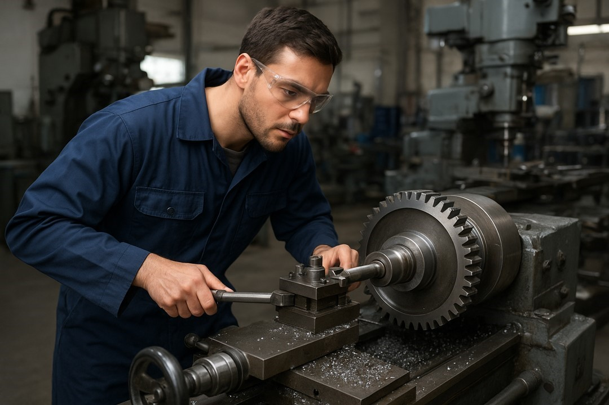
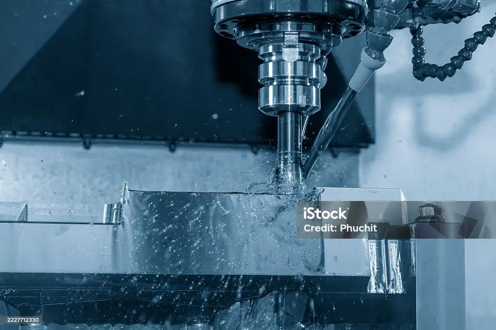
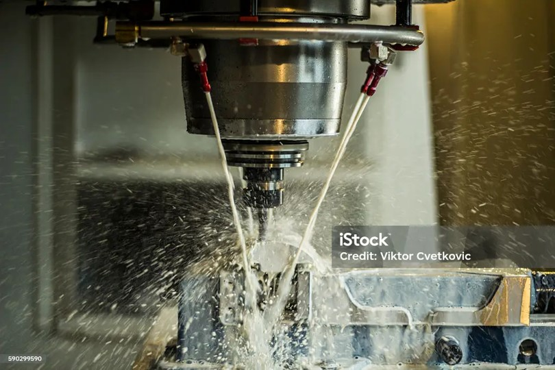
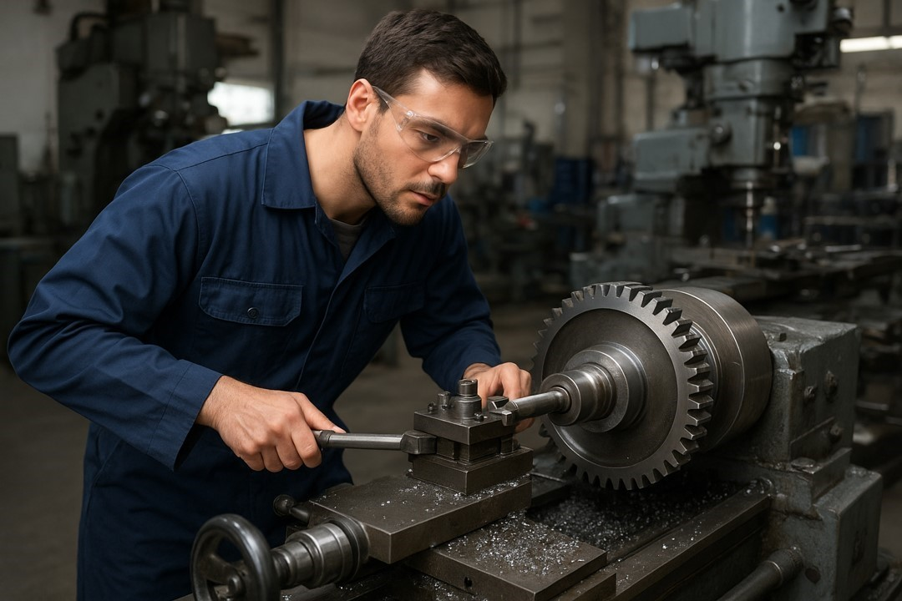
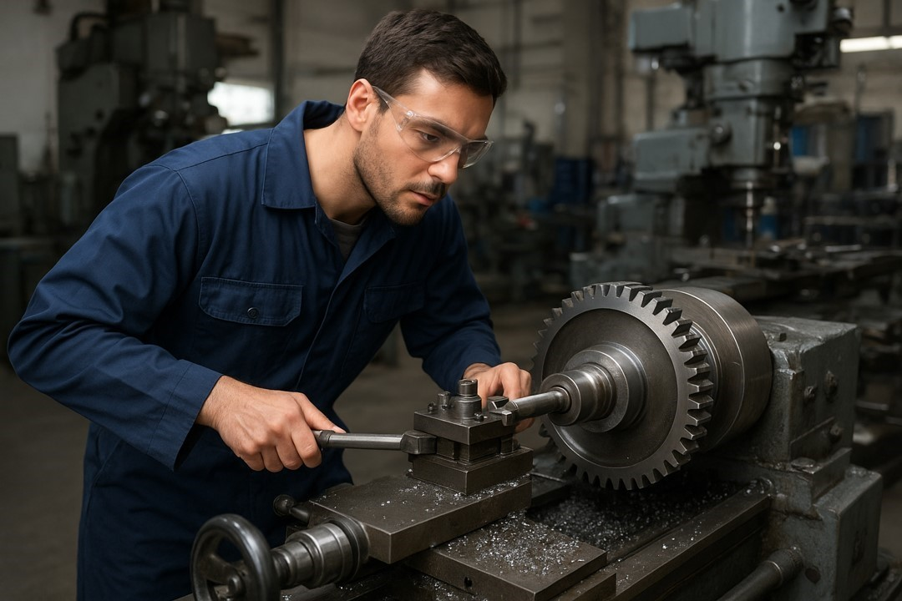
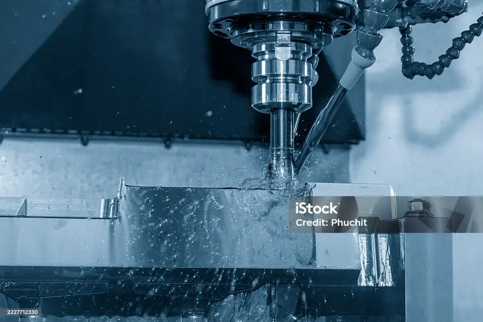
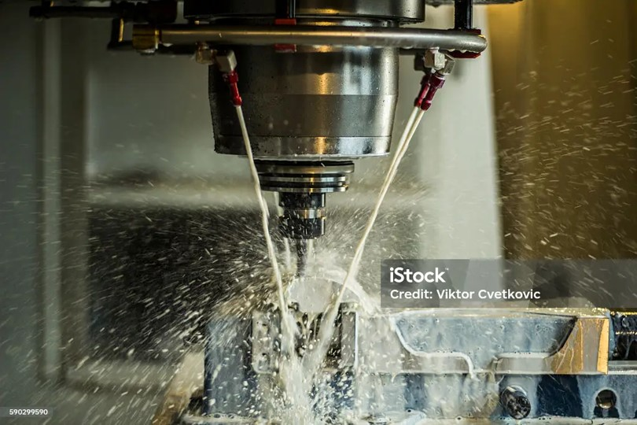
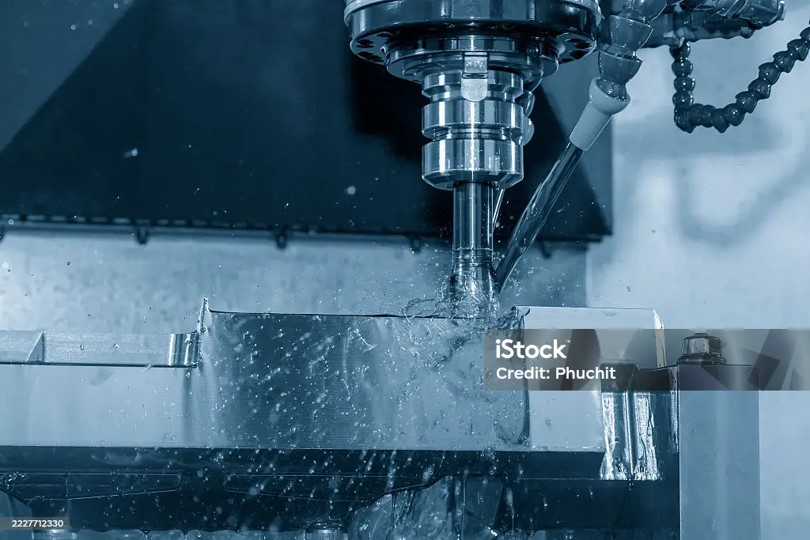
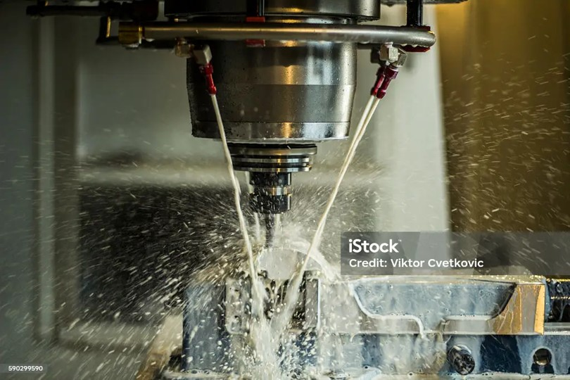

MCA 2017 Arsenijević je renomovana firma iz Čačka specijalizovana za preciznu obradu metala. Naš tim ima više od deset godina iskustva u industriji i posvećen je kvalitetu, tačnosti i inovacijama. Kombinujemo savremenu tehnologiju sa tradicionalnim zanatstvom kako bismo ostvarili vrhunske rezultate u svim projektima koje preuzimamo.
Naša proizvodnja obuhvata CNC glodanje, struganje, brušenje, erodiranje i lasersko sečenje metala. Svaki korak procesa kontroliše se pažljivo – od dizajna i planiranja do finalne obrade i isporuke. Zahvaljujući visokom nivou stručnosti i kvalitetnim materijalima, uspešno sarađujemo sa kompanijama iz automobilske, mašinske i energetske industrije.
U MCA 2017 Arsenijević verujemo da je poverenje osnova svakog poslovnog odnosa. Naši klijenti nas cene zbog tačnosti, transparentnosti i sposobnosti da pronađemo rešenja i za najzahtevnije projekte. Naša misija je da stalno unapređujemo procese i postavljamo nove standarde u oblasti obrade metala.
Usluge
CNC obrada metala – Precizna obrada po specifikacijama klijenata.
Lasersko sečenje – Visokoprecizno sečenje metala svih debljina.
Održavanje mašina – Servis i preventivno održavanje industrijskih mašina.
Galerija



Recenzije
“Odlična firma! Precizna obrada metala i profesionalan pristup.” – Klijent A
Kontakt
Adresa: Čačak, Srbija
Telefon: +381 63 123 4567
Email: info@mca2017.rs
About Us
MCA 2017 Arsenijević is a reputable company from Čačak, Serbia, specializing in precision metalworking. With over a decade of experience, our team combines expertise, technology, and craftsmanship to deliver exceptional results across various industries.
We offer CNC milling, turning, grinding, wire and electrode EDM, and laser cutting services. Every step of production is carefully monitored—from design and planning to the final inspection and delivery. Our goal is to ensure maximum precision, efficiency, and customer satisfaction in all aspects of our work.
We take pride in building long-term relationships based on trust and quality. Clients choose MCA 2017 Arsenijević for our reliability, transparency, and ability to deliver tailored solutions for complex metalworking projects. Our mission is continuous improvement and setting new standards in the machining industry.
Services
CNC Machining – Precision machining according to client specifications.
Laser Cutting – High-precision cutting of metals.
Machine Maintenance – Service and preventive maintenance.
Gallery
Reviews
"Excellent company! Precision and professionalism." – Client A
Contact
Address: Čačak, Serbia
Phone: +381 63 123 4567
Email: info@mca2017.rs
Über uns
MCA 2017 Arsenijević ist ein angesehenes Unternehmen aus Čačak, Serbien, das sich auf präzise Metallbearbeitung spezialisiert hat. Mit über zehn Jahren Erfahrung vereint unser Team Fachwissen, Technologie und Handwerkskunst, um herausragende Ergebnisse zu erzielen.
Unser Leistungsangebot umfasst CNC-Fräsen, Drehen, Schleifen, Drahterodieren, Elektroden-EDM und Laserschneiden. Jeder Produktionsschritt wird sorgfältig überwacht – von der Planung und Konstruktion bis zur Endkontrolle. Unser Ziel ist maximale Präzision und Kundenzufriedenheit.
Wir legen großen Wert auf langfristige Partnerschaften, die auf Vertrauen, Qualität und Zuverlässigkeit basieren. MCA 2017 Arsenijević steht für Transparenz, Professionalität und die Fähigkeit, maßgeschneiderte Lösungen auch für anspruchsvolle Projekte zu liefern.
Dienstleistungen
CNC-Bearbeitung – Präzise Bearbeitung nach Kundenspezifikationen.
Laserschneiden – Hochpräzises Schneiden von Metallen.
Maschinenwartung – Service und präventive Wartung.
Galerie
Bewertungen
"Ausgezeichnetes Unternehmen! Präzision und Professionalität." – Kunde A

 

 


